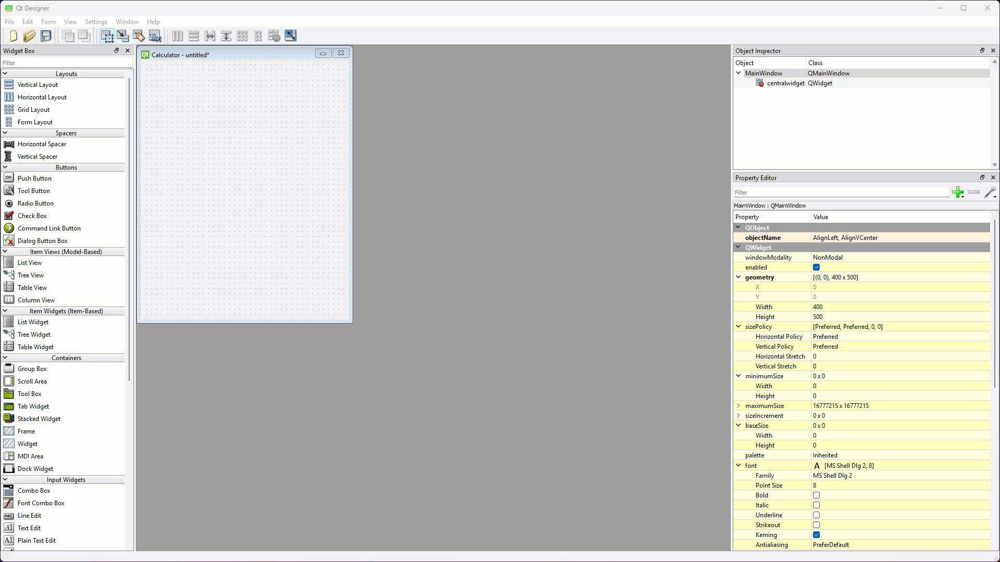

Tutorial 6 - Calculator App¶
In this tutorial you will:
apply learnt techiques to develop a calculator app
use QT Styles to change the appearance of your app
develop the application logic inside the control file
Now that we have learn rudimentary input and output widgets, we can develop a calculator application. This is a great starting project since calculators only consist of displays and buttons, and we know how to implement these in PyQt.
Create UI¶
To start this project we will create the UI file. Launch Qt Designer and create a new Main Window.
Format the Main Window¶
For the Main Window:
Remove the menu bar
Remove the status bar
In the Properties Editor, change the geometry to:
width → 400
height → 500
Change the windowTitle to Calculator

Display label¶
Now we will add the display label:
In the Widgets Toolbox find the Label widget
Click and drag it onto the window canvas
Then right-click the window canvas, choose Layout the Lay Out Vertically

In this tutorial we will rename all the widgets so it easier to refer to them in our code:
At the top of the Properties Editor, find objectName
Change it to label_display

Widget Names
All but the simplest of UIs will contain numerous widgets, so it is important to keep track of them. Here are some suggested conventions to help with naming them:
only name widgets that your code will interact with:
this mean you program will either get input from the widget or use it to provide output
ie. if a label never changes, there is no need to name it
use prefixes to denote the type of widget:
in your Python code you will not know if you are referring to a label or a button, so it is important to include a description in the name
for the purposes of these tutorials, we will just use Qt Designers name as out prefix (in this case label)
you may choose your own naming convention (eg. lbl for labels), just remember to be consistent
Finally we will format label_display:
Change the font to:
Family → Consolas (macOS might need to use SF Mono)
Point Size → 40
Change the Horizontal alignment → AlignRight
Buttons¶
Now we have to add the buttons to our calculator. To save time, we will add one button and format it. Then we will copy it for the other buttons, which will also copy the formatting.
First we need to add a grid layout below the label:
Locate the Grid Layout in the widget library
Drag and drop it onto the window canvas under label_display

Now to add and format the first button.
Find the Push Button widget in the widget library.
Drag and drop it into the red box defining the Grid Layout
Rename the Push Button to pushButton_7
Change its sizePolicy:
Horizontal Policy → MinimumExpanding
Horizontal Policy → MinimumExpanding
Change the font
Family → Consolas (macOS might need to use SF Mono)
Point Size → 20
Change the text → 7
Size Policy
In Qt, the sizePolicy determines how a widget behaves when a layout tries to resize it. It controls whether the widget can expand, shrink, or stay fixed in both the horizontal and vertical directions. A widget’s size policy is made up of two parts: horizontal policy and vertical policy.
Size Policy options
Policy |
Behaviour |
|---|---|
Fixed |
Stays the same size. No shrinking or expanding. |
Minimum |
Shrinks to minimum size but doesn’t grow. |
Maximum |
Grows as much as possible but doesn’t shrink. |
Preferred |
Prefers size hint but can shrink or expand. |
Expanding |
Shrinks or grows to use all available space. |
MinimumExpanding |
Doesn’t shrink below minimum size but expands if needed. |
Ignored |
Ignores size hint and resizes freely. |
Since we have finished setting the button’s properties, we can copy it.
Ctrl / Cmd click and drag pushButton_7 to copy it
Place the new button to the right of pushButton_7
Make sure the name is pushButton_8
Change the button text → 8

Copy the rest of the buttons so your UI looks like the one below.
Final touch¶
Our UI almost looks like a calculator. The last thing we will do is change the label_display widget’s text to 0.
Now it actually looks like a calculator.
Save the UI file¶
The UI is finished so time to save. Remember, it is important to save the UI file in the same directory (folder) as your main_window.py.
Select Save from the File menu
Call the file tutorial_06.ui
Convert UI file¶
Now we need to convert the UI file to a Python file, and we will do this in VS Code, but we are going to do something different. We will give our Python UI file a unique name, one that we won’t write over in latter tutorials.
Open VS Code via GitHub Desktop
Check that the tutorial_06.ui file is in your file panel.
Open a new terminal
At the prompt, type
pyuic6 -o ui_calculator.py -x tutorial_06.uiThen press enter.
Write the code¶
Now it is time to work on the controller.
Copy main_window.py¶
We want to give our controller file a meaningful name:
Copy main_window.py
Rename the copied file calculator.py
Run the code to test the results.
You should see the UI below, which is the wrong UI.
The reason for this is calculator.py is still looking for its UI in the main_window.py file.

To fix this:
change line 3 to the same as below

Run the code again to test.
You should now have your calculator UI.

Python’s eval method¶
Now that we know that our UI works, we need to discuss how our controller will work. We will leverage an awesome Python built-in function called eval(). It takes a string which is a mathematical equation, and calculates the results. For example, the line print(eval("3+2")) will print 5.
This means that we can gradually create a string in response to the button clicks, and the use eval() to work out the answer when pushButton_equal is clicked. It will get a little bit more complicated, but this is a good starting point.
String methods
Strings are super important in Python programming, so it pays to know all the ways you can manipulate them. w3schools’ Python String Methods page shows you all the built-in methods available in the Python Standard Library.